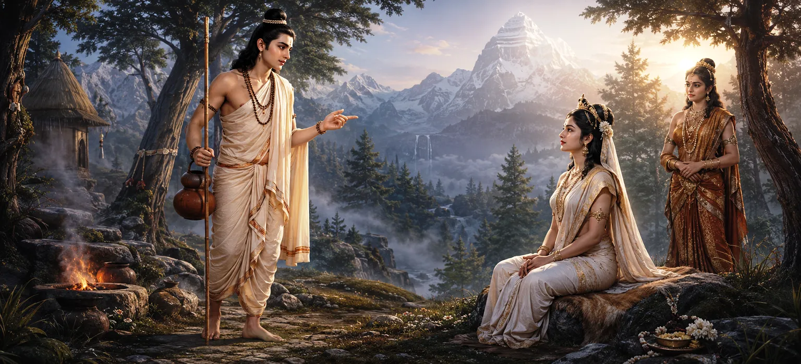

After learning that Pārvatī desired Lord Shiva as her husband, the mysterious Brahmacārin began speaking critically about him. Though the visitor was none other than Shiva himself in disguise, he deliberately described Shiva’s unusual appearance, austere lifestyle, and unconventional habits in order to test whether Pārvatī’s devotion rested upon true spiritual understanding or merely admiration. This extraordinary examination would reveal the depth of her faith before the world.
The young ascetic questioned why a princess of such beauty, virtue, and noble birth would seek marriage with Shiva. He spoke as though he could not understand her decision and suggested that many more suitable candidates existed.
The Brahmacārin described Shiva as one who covered his body with sacred ash, wore matted locks, adorned himself with serpents, and dwelt in lonely places. He questioned why anyone would prefer such an ascetic over a wealthy and powerful ruler.
Continuing the test, the Brahmacārin pointed out that Shiva possessed no palace, no kingdom, and no material wealth. He portrayed Shiva as a wandering ascetic who appeared detached from ordinary worldly responsibilities.
Although his words appeared critical, the Brahmacārin's purpose was not mockery but examination. Shiva wished to know whether Pārvatī understood the spiritual greatness hidden beneath the outward appearance that many misunderstood.
Despite hearing harsh words about the Lord she adored, Pārvatī remained calm. She listened respectfully and waited for the proper moment to respond. Her composure reflected both wisdom and deep devotion.
Seeing her patience, the Brahmacārin intensified his criticism. He continued describing Shiva's unconventional nature, hoping to discover whether even the slightest doubt existed within Pārvatī's heart.
No matter how many criticisms were spoken, Pārvatī's devotion remained completely unshaken. She knew that Lord Shiva was not to be judged by outward appearances. His apparent simplicity concealed infinite divine greatness and supreme spiritual truth.
Pārvatī's love for Shiva was founded upon knowledge of his true nature. She did not seek wealth, power, or worldly prestige. Her heart was dedicated to the Supreme Lord who transcended all material distinctions.
As the conversation continued, the success of Shiva's test became increasingly clear. Every criticism only revealed the strength of Pārvatī's understanding and the purity of her devotion. The moment of revelation was now drawing near.
True devotion remains firm despite criticism and doubt.
Spiritual wisdom perceives truth beyond outward forms.
The Divine tests devotees to reveal the depth of their faith.
The chapter reminds devotees that spiritual greatness is often hidden beneath simple appearances. Shiva's ascetic form conceals the Supreme Reality worshipped by gods, sages, and seekers throughout the universe.
Faith rooted in truth does not depend upon appearances or public opinion. Like Pārvatī, sincere seekers learn to recognize spiritual greatness even when the world fails to understand it.
The gods observed the exchange with admiration. They understood that Pārvatī was demonstrating extraordinary wisdom and devotion while Shiva himself was confirming the greatness of her spiritual resolve.
The Brahmacārin's criticisms had reached their peak, yet Pārvatī remained calm and steadfast. The next stage of the dialogue would reveal her powerful defense of Lord Shiva and demonstrate the full strength of her devotion.
"True devotion sees divine greatness where the world sees only outward appearances."
The mysterious Brahmacārin has openly criticized Lord Shiva, hoping to shake Pārvatī's determination. Yet her devotion remains unwavering. Continue to the next chapter to witness how Pārvatī passionately defends Lord Shiva and reveals her profound understanding of his divine nature.